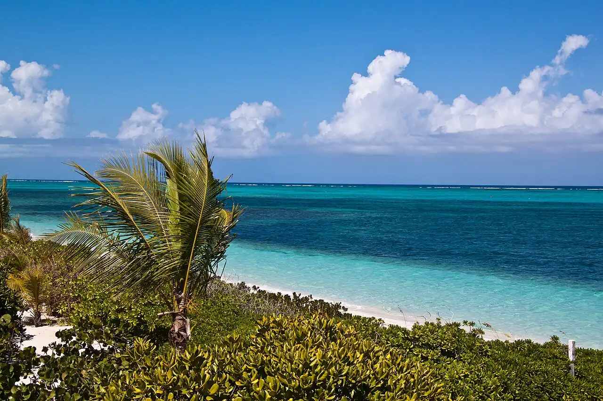

Smith’s Reef — Providenciales
Providenciales, Îles Turques-et-Caïques · snorkeling, baignade

Récif frangeant accessible à la nage depuis la plage, près de Turtle Cove, à l’ouest de Grace Bay. Des patates de corail peu profondes s’égrènent à quelques dizaines de mètres du bord.
- Lieu
- Providenciales, Îles Turques-et-Caïques
- Niveau
- Débutant
- Activités
- snorkeling, baignade
- Type d'eau
- Mer / océan
- Coordonnées
- 21.79, -72.22 (position approximative du secteur)
Dangers à connaître
- Chenal de bateaux tout proche, à l’entrée de la marina de Turtle Cove.
- Courant possible quand le vent souffle : reste près du bord si tu fatigues.
Le conseil d'Ocean Buddy
Passe par les accès publics signalés et reste à l’écart du chenal de la marina de Turtle Cove, emprunté par les bateaux.
Ouvrir dans Ocean Buddy Télécharger sur l'App Store
Source : Fiche Ocean Buddy · septembre 2026 · à vérifier localement.